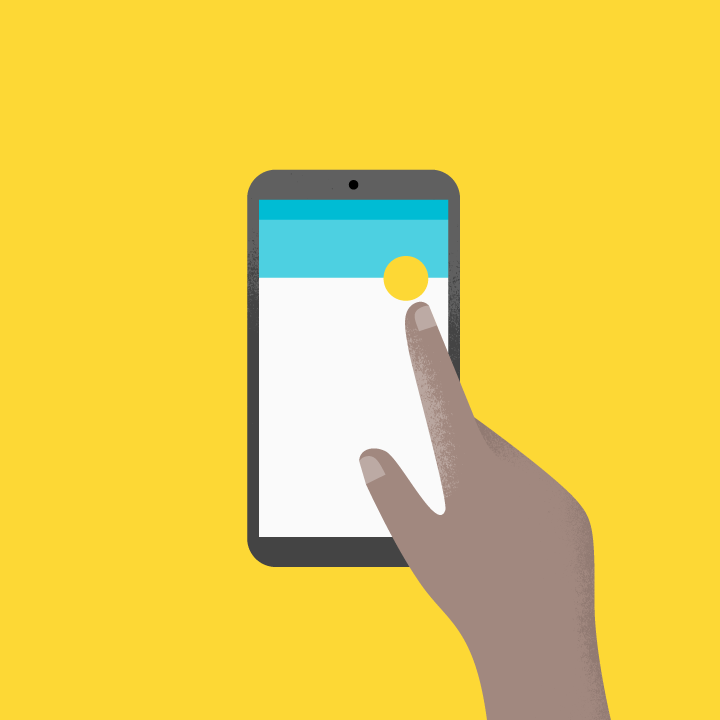
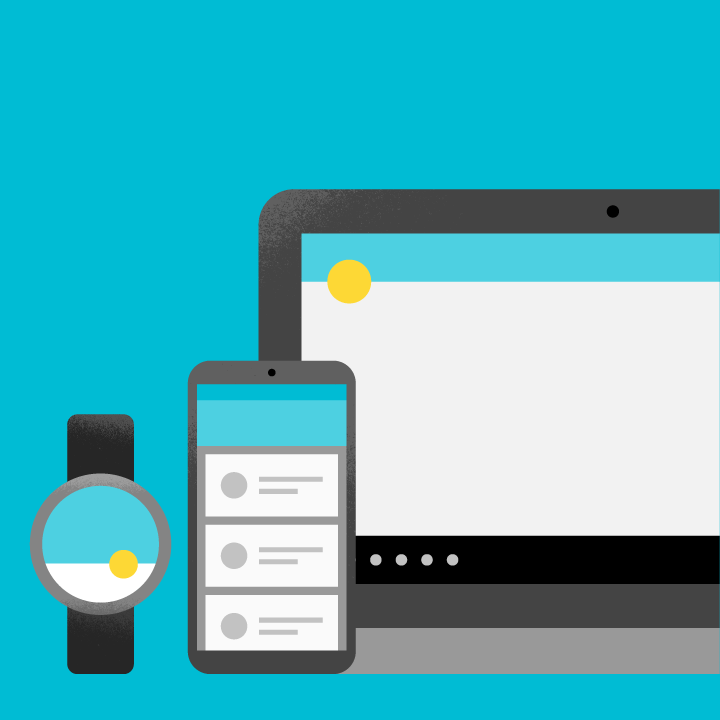

原则
一款设计良好的产品可供所有的用户使用，包括视力低下、失明、听力障碍、认知障碍或运动障碍的用户。改进产品的无障碍功能可以增强所有用户的可用性，这是非常值得做的事情。
Material Design 内置的无障碍功能将帮助你的应用适应所有用户。本节内容主要适用于手机端 UI 设计。有关设计和开发完全无障碍的产品的详情，请访问Google 无障碍网站。

明确的
使用清晰的布局以及明确的行动召唤设计，来帮助用户浏览你的应用。每添加一个按钮、图片或一行文本都会使界面变得更加复杂，可以通过以下方式简化你的应用：
- 使可见元素清晰
- 充足的对比度和尺寸
- 清晰的重要性等级
- 关键信息的辨识性一目了然

健全的
设计应用时应尽可能的包容各种用户。当用户第一次看到应用时可能只有短暂的注意力，或者只是使用纯文本的屏幕阅读器（使用语音合成器朗读文本或使用盲文显示器产生的震动触觉）。你的应用应该方便每位用户来：
- 导航：让用户清楚地知道自己在应用中所处的位置，以及哪些是重要内容。
- 了解重要任务：通过多重视觉样式和文本提示来强化重要信息。使用颜色、形状、文本和运动来传达正在发生的事情。
- 访问应用：为内容添加适当的标签，来适应那些使用纯文字版的用户。

具体的
支持特定平台的辅助技术，就像支持触摸、键盘和鼠标的输入方式一样。例如，确保您的 Android 应用可以适配 Google 的屏幕阅读器TalkBack。
辅助技术通过屏幕阅读器、放大设备、轮椅、助听器或记忆辅助设备等设备帮助增强、维持或改善残疾人使用应用的能力。